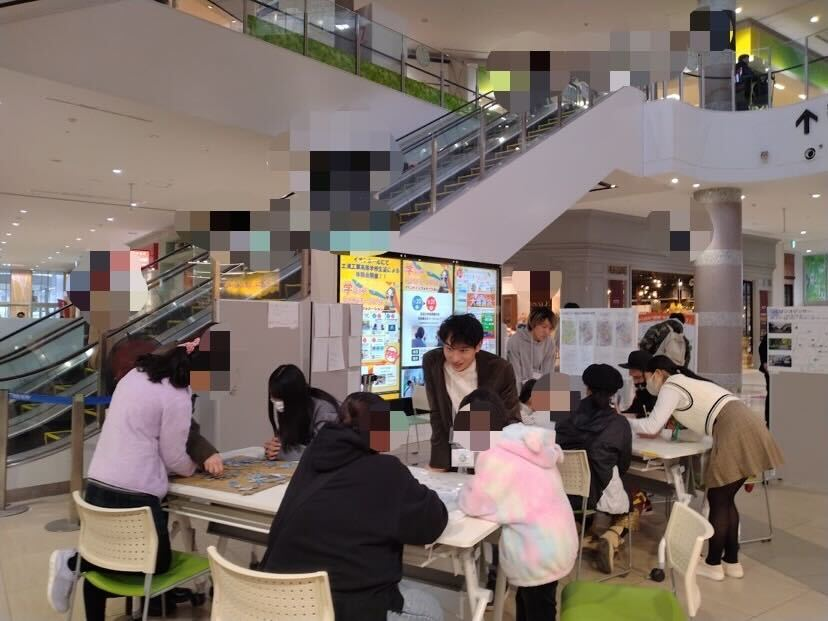

FEATURES
特集
イオンモールつくばで展示・ワークショップを行いました
2024/1/20
2024年1月20、21日に、イオンモールつくば様にお招きいただき、つくば周辺の地理に焦点を当てた展示とメンタルマップを基にしたワークショップを行いました。当会の活動を活かした催しに、連日数多くの方に訪れていただきました。新たに作成した茨城県市町村パズルは特に小さいお子様に大変人気で、遊びながら私たちがかかわることで学習のきっかけになる可能性を感じました。
また、展示を通じ、研究学園都市開発前からつくば地域を知る方から当時のお話をお伺いできたり、現在つくば周辺に住む方から地域に対するイメージをお伺いできたりと、ご来場いただいた方々から当会も新たな学びを得ることができました。

説明の様子
身近な地域をテーマにすることで、幅広い年代の方にとって地理に興味を持つきっかけとなることができれば幸いです。
日常的な関わりが希薄になってしまっている地域の方々に向けて、当会が発信できる機会は稀有なもので、大きな学びとなりました。今後も、日々の活動で得た知見を積極的に発信してまいります。
会場の様子